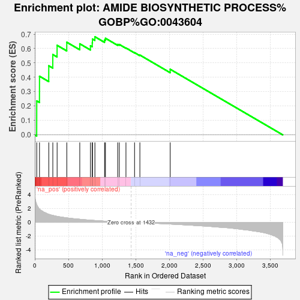

| | | Dataset | TNBC_vs_Healthy_ranks |
| Phenotype | NoPhenotypeAvailable |
| Upregulated in class | na_pos |
| GeneSet | AMIDE BIOSYNTHETIC PROCESS%GOBP%GO:0043604 |
| Enrichment Score (ES) | 0.68220603 |
| Normalized Enrichment Score (NES) | 2.0175576 |
| Nominal p-value | 0.006993007 |
| FDR q-value | 0.025585374 |
| FWER p-Value | 0.177 |
Table: GSEA Results Summary

Fig 1: Enrichment plot: AMIDE BIOSYNTHETIC PROCESS%GOBP%GO:0043604
Profile of the Running ES Score & Positions of GeneSet Members on the Rank Ordered List
Fig 2: AMIDE BIOSYNTHETIC PROCESS%GOBP%GO:0043604: Random ES distribution
Gene set null distribution of ES for AMIDE BIOSYNTHETIC PROCESS%GOBP%GO:0043604